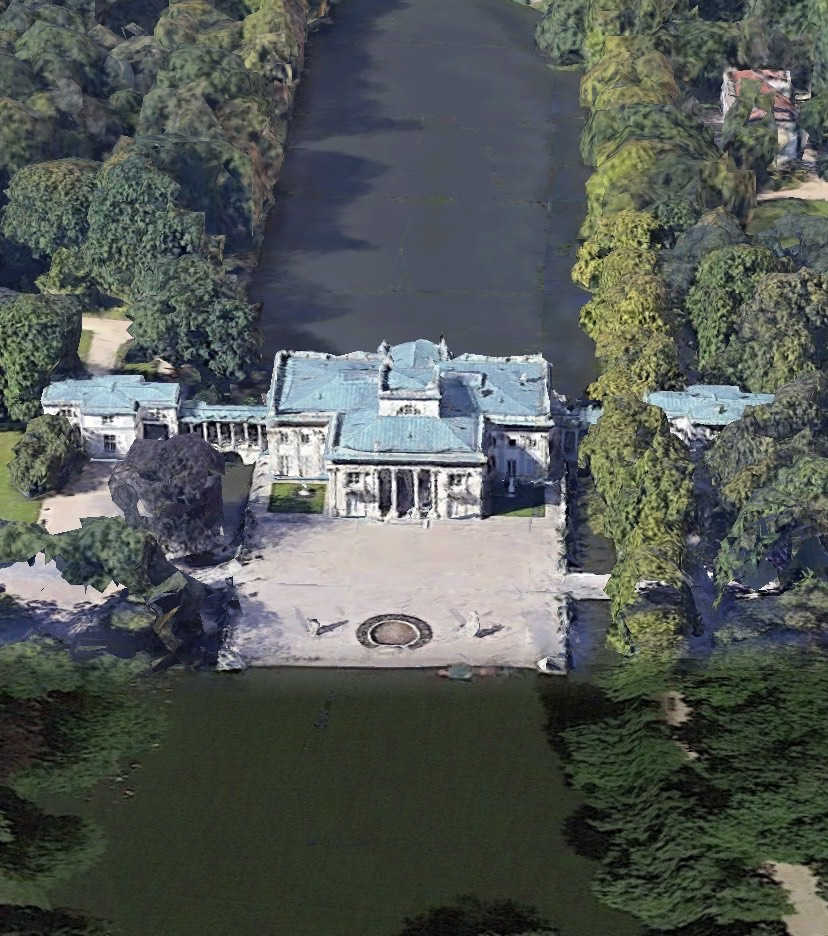

Pałac Na Wyspie, pałac Na Wodzie, pałac Łazienkowski – klasycystyczny pałac w Łazienkach Królewskich w Warszawie.
Pierwotnie barokowy pawilon Łaźni (Hippokrene), zbudowany według projektu Tylmana z Gameren w 1683–1689 dla marszałka wielkiego koronnego Stanisława Herakliusza Lubomirskiego, przebudowany w 1772–1793 przez Dominika Merliniego i Jana Chrystiana Kamsetzera dla króla Stanisława Augusta Poniatowskiego.
Zespół pałacowy leży na sztucznej wyspie otoczonej przez staw. Jest połączony z lądem dwoma mostami zwieńczonymi kolumnami. Przy jeziorze znajduje się również Amfiteatr, a przed przebudową pałacu, w roku 1767, utworzono ogród francuski.
Pałac został rozbudowany na życzenie króla Stanisława Augusta Poniatowskiego w latach 1772–1793 przez przebudowę barokowego pawilonu Łaźni, zaprojektowanego i zbudowanego w latach 1683–1689 przez Tylmana van Gameren dla marszałka wielkiego koronnego Stanisława Herakliusza Lubomirskiego. W latach 1788–1793 pałac rozbudowano w stylu klasycystycznym według projektu Dominika Merliniego. Autorami dekoracji malarskiej i rzeźbiarskiej byli m.in. Marcello Bacciarelli i Jan Bogumił Plersch.
Pałac był od 1775 letnią rezydencją króla. W lecie, od 1784 roku, w sali jadalnej, która dawnej pełniła funkcję sypialni, odbywały się organizowane przez władcę obiady czwartkowe. Wszelkie większe przyjęcia, zwłaszcza tańce i bale, organizowano w sali balowej. Na piętrze budynku znajdowały się apartamenty Stanisława Augusta Poniatowskiego. Władca miał tam swój gabinet, bibliotekę, garderobę i sypialnię. Na piętrze wydzielone zostało również mieszkanie dla bibliotekarza oraz przestrzeń dla osobistego strażnika monarchy.